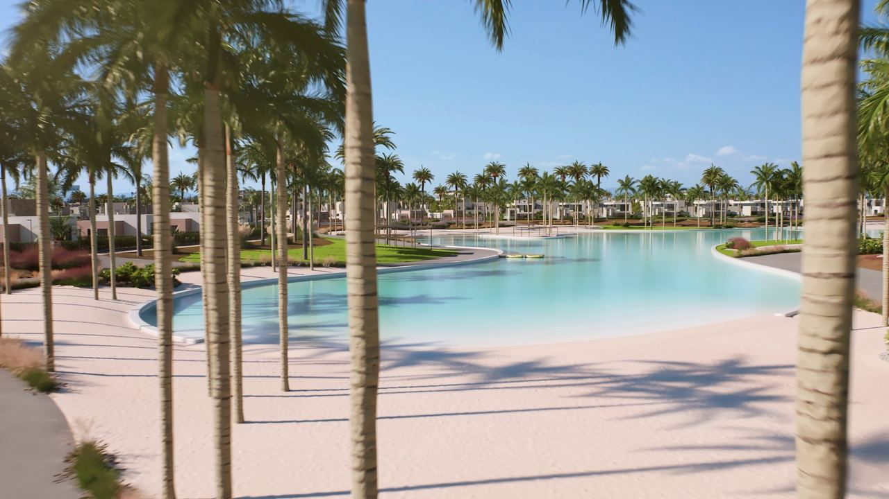

Miejsca i inwestycje
Costa Cálida – czy warto kupić nieruchomość na Ciepłym Wybrzeżu?
 Autor: Lucyna Gacek · · aktualizacja · 3 min czytania
Autor: Lucyna Gacek · · aktualizacja · 3 min czytania

W skrócie
Costa Cálida to wybrzeże regionu Murcji, na południe od Costa Blanca. Ma ciepłe morze, płytką lagunę Mar Menor, dużo pól golfowych i zwykle niższe ceny niż Costa Blanca i Costa del Sol.
Przed zakupem warto znać też minusy: Mar Menor w ostatnich latach przeszła poważny kryzys ekologiczny i wciąż się odradza, a podatek przy zakupie z rynku wtórnego wynosi 7,75%. Najbliższe lotniska to Murcja (Corvera) i Alicante.
Costa Cálida, czyli „Ciepłe Wybrzeże”, jest mniej znana niż sąsiednia Costa Blanca. Wyjaśniamy, co ją wyróżnia, gdzie szukać mieszkania i na co uważać.
Gdzie leży Costa Cálida
To około 250 km wybrzeża regionu Murcji, od San Pedro del Pinatar przy granicy z prowincją Alicante po Águilas na południu. Najważniejsze miejsca to:
- Mar Menor – San Pedro del Pinatar, San Javier, Los Alcázares i La Manga, wąski pas lądu między laguną a morzem.
- Cartagena – historyczne miasto portowe z rzymskim teatrem.
- Południe – Mazarrón i Águilas ze spokojnymi zatoczkami.
- W głębi lądu – osiedla golfowe, m.in. przy Torre-Pacheco i w La Manga Club.
Lotnisko Región de Murcia w Corvera działa od 2019 r. Lotnisko w Alicante, z większą liczbą lotów z Polski, jest od Mar Menor około 45–60 minut samochodem.
Mar Menor: atut, ale też ryzyko
Mar Menor to jedna z największych słonych lagun w Europie. Jest płytka i ciepła, dlatego latem woda jest cieplejsza niż w morzu, a laguna przyciąga rodziny z dziećmi, seniorów i miłośników żeglarstwa i kitesurfingu. W Lo Pagán (San Pedro del Pinatar) są znane kąpiele błotne.
W latach 2016–2021 laguna przeszła poważny kryzys ekologiczny: zakwity glonów i masowe śnięcie ryb, głównie przez spływ nawozów z pól. W 2022 r. Mar Menor jako pierwszy ekosystem w Europie dostał osobowość prawną, a region prowadzi program odbudowy. Stan wody jest lepszy niż w najgorszych latach, ale laguna wciąż jest wrażliwa. Przed zakupem w pierwszej linii przy Mar Menor zapytaj o ostatnie sezony i sprawdź mapę powodziową, bo okolice Los Alcázares były kilka razy zalane po ulewach.
Golf i aktywny wypoczynek
La Manga Club ma trzy pola golfowe, centrum tenisowe i boiska, na których trenują drużyny z całej Europy. W okolicy jest wiele innych osiedli golfowych. Spokojne wody laguny sprzyjają żeglarstwu, windsurfingowi i kitesurfingowi przez większą część roku.
Ceny i koszty zakupu
Ceny na Costa Cálida są zwykle niższe niż na Costa Blanca i dużo niższe niż na Costa del Sol. Za cenę apartamentu w lepszej części Costa del Sol często kupisz tu dom z basenem. Pamiętaj o innych podatkach niż w sąsiednich regionach:
| Region Murcji | Region Walencji (Costa Blanca) | |
|---|---|---|
| Podatek przy zakupie z rynku wtórnego | 7,75% | 9% (11% powyżej 1 mln €) |
| Nowe mieszkanie | 10% VAT + 1,5% opłaty skarbowej | 10% VAT + 1,4% opłaty skarbowej |
Wynajem wakacyjny jest tu bardziej sezonowy niż na Costa Blanca: latem jest dużo chętnych, zimą wyraźnie mniej. Nie zakładaj więc pełnego obłożenia przez cały rok. Zobacz zakup apartamentu na wynajem.
Przykład: dom przy Mar Menor czy apartament w Torrevieji
Pan Piotr ma 260 000 € i waha się między Torrevieją a okolicą Mar Menor. W Los Alcázares może kupić dom szeregowy z trzema sypialniami i wspólnym basenem kilka minut od laguny. W Torrevieji za tę kwotę dostanie apartament z dwiema sypialniami blisko morza. Na zakupie domu z drugiej ręki w Murcji zapłaci 20 150 € podatku, w Torrevieji 23 400 €. Wybiera dom, bo przyjeżdża z wnukami, ale przed podpisaniem umowy sprawdza mapę powodziową.
Najczęstsze pytania
Gdzie leży Costa Cálida?
Na wybrzeżu regionu Murcji, na południe od Costa Blanca, od San Pedro del Pinatar po Águilas.
Czy można kąpać się w Mar Menor?
Tak. Laguna jest popularnym kąpieliskiem, a jakość wody jest regularnie badana. Po kryzysie ekologicznym z lat 2016–2021 stan się poprawił, ale warto sprawdzać aktualne komunikaty.
Czy na Costa Cálida jest taniej niż na Costa Blanca?
Zwykle tak, szczególnie w przypadku domów. Podatek przy zakupie z rynku wtórnego jest też niższy: 7,75% wobec 9% w regionie Walencji.
Interesuje Cię Costa Cálida? Zobacz nieruchomości na sprzedaż na Costa Cálida albo napisz do nas.